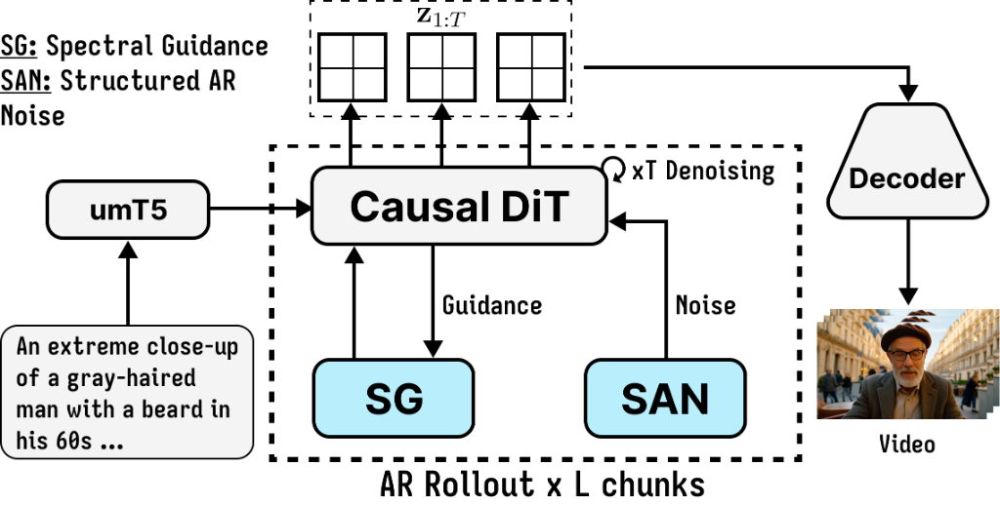
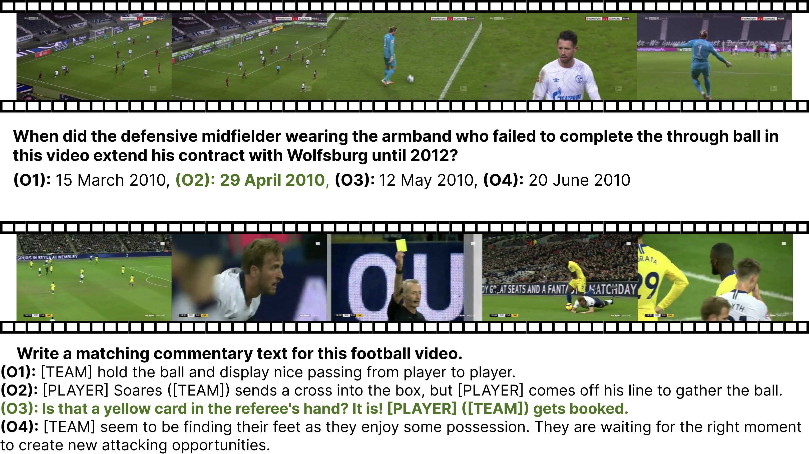
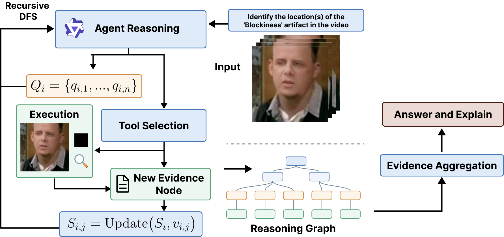

|
Thanh-Nhan Vo I am currently an undergraduate student with a strong passion for scientific research, deeply dedicated to exploring the world of Generative AI and Video Reasoning. At present, I am working as a Research Assistant at SELAB (Software Engineering Laboratory), which belongs to the University of Science, Vietnam National University – Ho Chi Minh City (VNU-HCM). I am fortunate to be conducting research under the guidance and mentorship of MSc. Trong-Thuan Nguyen and Assoc. Prof. Minh-Triet Tran, whose expertise and support have played a significant role in shaping my research mindset and academic direction. Below is an overview of my research journey so far. |

|
News |
| [Jul 2026] Won the Best Project award at SSIP'26 with team AgentSys. |
| [Jun 2026] Secured Rank 3 in the ACM MM 2026 TRIDENT Grand Challenge. |
| [May 2026] Achieved Top 10 in the CVPR 2026 SoccerNetVQA Challenge. |
| [Apr 2026] Selected as a Batch 1 Researcher at SAIH (Saigon AI Hub). |
| [Jan 2026] Presented our work at MMM'26 (International Conference on Multimedia Modeling). |
| [Dec 2025] Presented our work at SOICT'25 (International Symposium on Information and Communication Technology). |
| [Dec 2025] Received Special Award at Data for Life (Hack for Growth 2025) with team AquaSafe. |
| [Nov 2025] Received THE 2025 LOTTE SHIN KYUK-HO Scholarship Award. |
| [Aug 2025] Presented my first work at MAPR'25 (International Conference on Multimedia Analysis and Pattern Recognition). |
| [Mar 2025] Started as a Research Assistant at SELAB (Software Engineering Laboratory), VNU-HCM |
Publications [my favorites | still my favorites, but all ]I'm interested in Computer Vision, Video Reasoning, Generative AI and Scene Graph. |
|
 |
arXiv'26
SAGA: Stable Acceleration Guidance for Autoregressive Video Generation
Thanh-Nhan Vo, Trong-Thuan Nguyen, Trung-Hoang Le, Tam V. Nguyen, Minh-Triet Tran arXiv (Comming Soon), 2026 Project Page / Paper / Code A training-free stable acceleration guidance framework for autoregressive video generation that suppresses unstable high-frequency kinematic energy while preserving low-frequency semantic motion. |

|
arXiv'26
SoccerNet 2026 Challenges Results
SoccerNet 2026 Team (including Thanh-Nhan Vo) arXiv, 2026 Challenge Report Paper The SoccerNet 2026 Challenges constitute the sixth annual edition of the SoccerNet open benchmarking effort, dedicated to advancing computer vision research in sports video understanding. |

|
MMM'26
VENUS: Visual Editing with Noise Inversion Using Scene Graphs
Thanh-Nhan Vo, Trong-Thuan Nguyen, Tam V Nguyen, Minh-Triet Tran International Conference on Multimedia Modeling (MMM), 2026 Project Page / Paper / GitHub Visual editing with noise inversion using scene graphs. |
|
 |
ICMV'26
TreeSoc: Tree-Structured Dynamic Reasoning and Tool Synergy for Soccer Video Understanding
Thanh-Nhan Vo, Thanh-Khoi Nguyen, Trong-Thuan Nguyen, Trung-Hoang Le, Minh-Triet Tran International Conference on Machine Vision (ICMV), 2026 Project Page / Paper / GitHub Tree-structured dynamic reasoning and tool synergy for soccer video understanding. |

|
SOICT'25
SimGraph: A Unified Framework for Scene Graph-Based Image Generation and Editing
Thanh-Nhan Vo, Trong-Thuan Nguyen, Tam V Nguyen, Minh-Triet Tran International Symposium on Information and Communication Technology (SOICT), 2025 Project Page / Paper / GitHub A unified framework for scene graph-based image generation and editing. |

|
MAPR'25
Saturn: Autoregressive Image Generation Guided by Scene Graphs
Thanh-Nhan Vo, Trong-Thuan Nguyen, Tam V Nguyen, Minh-Triet Tran 2025 International Conference on Multimedia Analysis and Pattern Recognition (MAPR), 2025 Project Page / Paper / GitHub Autoregressive image generation guided by scene graphs. |
Competitions & Challenges |
|
 |
ACM MM 2026
TRIDENT: Tri-modal Deepfake Perception, Detection, and Hallucination Grand Challenge
Rank 3 (Video Track) Proposed GUARD, a robust method to address the Forensic Triad of deepfake perception, detection, and hallucination. Successfully navigated complex tri-modal evaluations to achieve Rank 3 in the highly competitive video track. |
|
|
CVPR 2026
SoccerNet Challenge 2026 - Visual Question Answering (VQA)
Top 10 / Challenge Report Paper Tackled 14 distinct multi-modal QA tasks (text, image, and video) aimed at comprehensive soccer understanding. Demonstrated strong reasoning capabilities to secure a Top 10 position on the final challenge leaderboard. |
Projects |
|
|
Saigon AI Hub
Batch 1 Researcher
Ho Chi Minh City, Vietnam Honored to be selected for the inaugural cohort as a Batch 1 Researcher at the Saigon AI Hub (SAIH) — a premier, strategic AI R&D initiative jointly established by VNG Group and VNU-HCM, in collaboration with Google Labs. |
|
|
VNU-HCM Grant
Image and Video Content Generation from Scene Graphs
VNU-HCM National University Research Grant Participated in a national university-level research project focusing on generating image and video content from scene graph representations. |
|
© 2025 Thanh-Nhan Vo · Last updated: July 2026 · Design inspired by Jon Barron · Visitor Map |